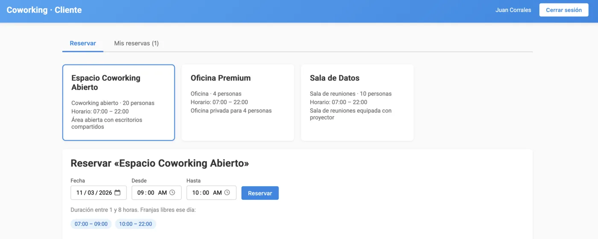
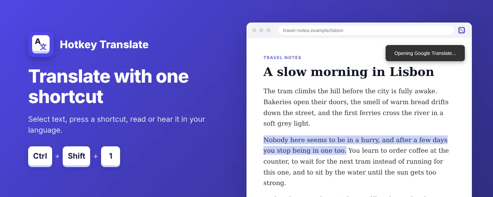
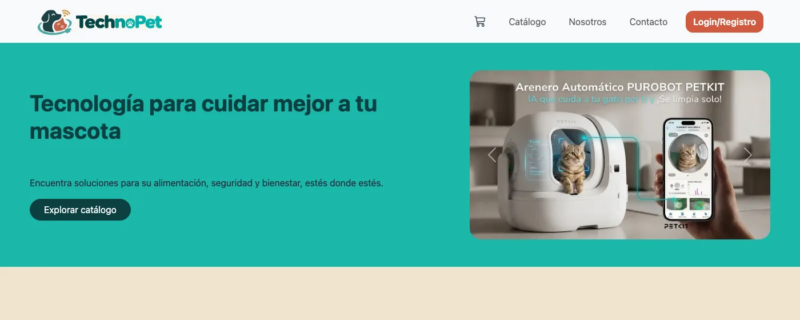

Sobre mí
Vengo del soporte técnico y mantenimiento de hardware: más de seis años trabajando de
forma independiente en atención a clientes, gestión de ventas y buenas prácticas de
seguridad informática. Esa experiencia me llevó a reconvertirme a desarrollador full stack:
hoy me formo en Java y Spring Boot para el backend y Angular para el frontend, con bases en
JavaScript, Python, SQL, HTML y CSS, y estoy aprendiendo microservicios.
En la nube ya tengo un primer despliegue real: subí una aplicación web a AWS. La
empaqueté en contenedores Docker, la puse a correr en una instancia EC2 y conecté su base de
datos PostgreSQL en Amazon RDS. Ahora me preparo para la certificación AWS Certified Cloud
Practitioner y sigo explorando otros servicios como Aurora y DynamoDB.
Mi camino empezó a los 15 años. Mis abuelos notaron mi interés por las computadoras y me
inscribieron en un curso de mantenimiento y reparación de equipos. Fue una gran sorpresa:
gracias a ese curso generé mis primeros ingresos como independiente y, desde entonces, mi
curiosidad por entender cómo funciona no solo el hardware sino también el software no ha
parado de crecer.
Con el tiempo vi que en esta profesión hay mucho por aprender, así que empecé a asistir a
eventos de desarrollo y hackathons, y a viajar fuera de mi ciudad para participar en
encuentros de tecnología. Me encanta ver cómo, a medida que avanzo, aparecen errores y
también la destreza que debo cultivar para resolverlos.
Después de 6 años como independiente, busco una práctica o un primer empleo como
desarrollador Java, para aportar mis conocimientos en la construcción de software junto a
personas que compartan esa misma motivación. Por eso sigo formándome cada día, a la espera
de la oportunidad de demostrar lo que puedo aportar.
Proyectos

Personal
Demo temporalmente fuera de línea
Despliegue en AWS de un sistema de reservas para coworking
Puse en producción una aplicación web de reservas para coworking, con API en Spring Boot,
frontend en Angular y base de datos PostgreSQL. Configuré los entornos de desarrollo y
producción para que las credenciales salgan de variables de entorno y no del código, y dejé
un flujo sencillo para publicar nuevas versiones.
Empaqueté el backend y el frontend en contenedores Docker para que funcionen igual en mi
equipo y en el servidor. Construyo las imágenes, las subo a Docker Hub y una instancia EC2
(un servidor virtual de AWS) las descarga y ejecuta. nginx sirve la página y redirige las
peticiones a la API. La base de datos está en Amazon RDS, el PostgreSQL administrado de AWS,
que se encarga de los respaldos y el mantenimiento. Por ahora la demo está apagada, pero el
repositorio tiene capturas del proyecto.
Desafíos y soluciones
- Se acabó la prueba en Railway; migré el backend a AWS con EC2 y RDS.
- Aprendí el flujo del código al despliegue practicando en la consola de AWS.
- Asocié una Elastic IP a EC2 para mantener la IP fija.
Características clave
- Roles de cliente y administrador.
- Reservas sin solapamientos gracias al bloqueo de fila en la base de datos.
- Autenticación con JWT.
- Migraciones con Flyway e integración continua con GitHub Actions.
Lo que aprendí
- Llevé el proyecto de principio a fin: del primer sprint al despliegue en la nube.
- Ahora distingo los tipos de instancia EC2.

Personal
Hotkey Translate
Creé una extensión de Chrome (Manifest V3) que traduce el texto seleccionado con un atajo
de teclado (Ctrl + Shift + 1) y reproduce su pronunciación (Ctrl + Shift + 2) sin salir de
la página. Abre Google Translate con la selección ya traducida y reproduce el audio desde
un documento offscreen, con la voz del sistema (chrome.tts) como respaldo. Antes se
llamaba Simple Translate.
La publiqué en Chrome Web Store y sigo añadiéndole mejoras.
Desafíos y soluciones
- Quería traducir rápido con un par de teclas; lo resolví con atajos de teclado.
- La empecé desde cero: estudié y programé hasta tenerla funcionando.
- Me registré como developer en Chrome Web Store para publicarla.
Características clave
- Traduce el texto seleccionado con Ctrl + Shift + 1.
- Reproduce la pronunciación con Ctrl + Shift + 2.
- Audio desde un documento offscreen, con chrome.tts como respaldo.
- Publicada en Chrome Web Store con Manifest V3.

En equipo
En construcción
TechnoPet, tienda virtual de productos para mascotas
Tienda virtual que construimos en equipo en el bootcamp de Generation Colombia (Grupo 9,
cohorte 14). Tiene catálogo de productos, carrito, registro e inicio de sesión y un panel
de administración. El backend es una API en Spring Boot con autenticación mediante JWT y
los datos viven en MySQL. Sigue en construcción.
Mi contribución: hice el footer, la página de login a partir del wireframe del equipo, la sección
"Conoce Techno Pet" de la página "sobre nosotros" y, en el catálogo, la barra de búsqueda y la paginación.
También apoyé la implementación de JWT, las pruebas de la API con Bruno | Postman y el uso de localStorage.
Cada quien tenía tareas asignadas, pero revisábamos e integrábamos el trabajo en conjunto
Colaboradores (Grupo 9, cohorte 14):
JessicaMP,
stefa77777 y
Juanramosac.
Desafíos y soluciones
- Éramos cuatro en un repo: una rama por funcionalidad para no pisarnos el código.
- Acordamos endpoints y formatos de datos antes de conectar frontend y backend.
- Ayudé con JWT: un filtro de Spring Security valida el token antes del controlador.
- Probamos la API con Bruno y Postman y guardamos datos con localStorage.
Características clave
- Registro e inicio de sesión con JWT (Spring Security y JJWT).
- API REST por capas, con validación de datos y manejo de excepciones.
- Catálogo por categorías con búsqueda y paginación, carrito y panel de administración.
- MySQL con modelo entidad-relación, scripts de creación y datos de prueba.
- Frontend desplegado en GitHub Pages.